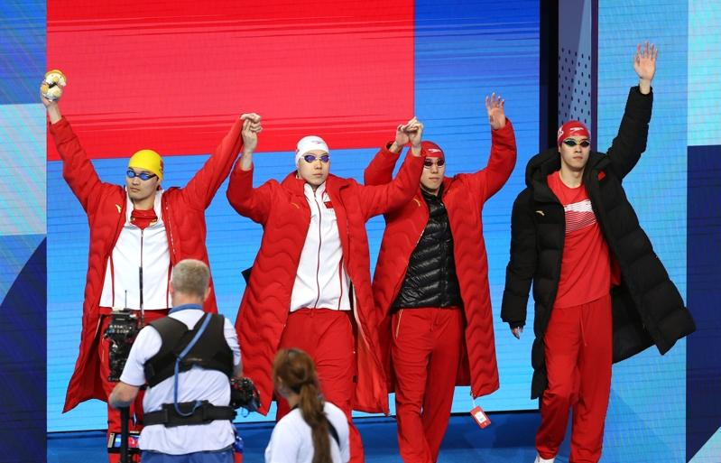

中国4日在巴黎奥运游泳项目男子400公尺混合式接力摘金，终结美国在这个项目的不败纪录，围绕于禁药话题的本届奥运泳池项目也全部结束。
男子400公尺混合式接力，中国派出徐嘉余、覃海洋、孙佳俊、潘展乐出赛。纽约时报指出，游中国最后一棒100公尺自由式的潘展乐，在20岁生日的这天游出45.92秒，一举帮中国从第3冲到第1。
潘展乐最后一棒游出的成绩，比他在7月31日男子100公尺自由式打破世界纪录摘金的46秒40更快。中国在这次巴黎奥运泳池畔共拿下12面奖牌（2金、3银、7铜），虽比上届东京奥运少1金，但总奖牌数却翻倍。
自从男子400公尺混合式接力于1960年登场以来，除1980年杯葛莫斯科奥运未参战，美国在这个奥运项目15战全胜，这回是首度让出王座；法国拿到铜牌，英国第4。
本届奥运因俄罗斯被摒除于门外，西方查看禁药的矛头转向中国。纽约时报今年4月20日披露，在上届东京奥运赛前7个月，中国有23名游泳选手被验出trimetazidine阳性。trimetazidine是一种治疗心绞痛药物，可借由增加心脏血流量提高运动表现。
中国反兴奋剂中心当时将23名选手验出阳性归因于吃到污染的食物，世界反禁药组织（WADA）也接受中方调查结果让23名选手豁免。
纽时7月30日又引述匿名人士，另指2名曾于2022年10月验出阳性的选手有一人参加巴黎奥运，中方依然以食品污染替选手脱罪；中方指责纽时拿禁药议题当工具干扰中国选手。世界反禁药组织也证实，2人虽确实验出微量美雄酮，但仍不脱食品污染范畴。
英国「卫报」指出，话题也引发美国反禁药组织（USADA）与世界反禁药组织间龃龉。美方指控世界反禁药组织放任中国在有利的情况下比赛，世界反禁药组织则回击，美方藉暗指WADA行事不当进行抹黑。
世界反禁药组织在声明中说：「美国媒体近日暗指WADA和反禁药界普遍存在不当行为，让中国选手遭政治化的问题进一步加剧。一如我们最近几个月所见，WADA被不公地卷入本毋须参与的超级强权间地缘政治对抗。」
世界反禁药组织坦承，他们确实担心有违反规定的选手以误食受污染肉品为借口来开脱，从案件数来看，许多国家显然都存在这类食物源污染，「特别是除中国外，光是过去几个月美国就发生好几起类似情况」。
美国国家广播公司新闻网（NBC News）也认为，禁药话题变成美国单挑中国、世界反禁药组织及国际奥会（IOC）。
主管国际游泳事务的世界水上运动总会（World Aquatics）指出，中国这次参加巴黎奥运的31名游泳选手，从今年初以来接受各个反禁药机构平均21次药检，美国选手仅6次。
法新社报导，这次奥运斩获1银5铜的中国女子游泳好手张雨霏盼持疑者不妨去看相关数据。
她说：「我们每人在2个月内都被药检20到30次，平均一周近4次，没人被验出阳性。」
世界水上运动总会在巴黎奥运开赛前公布数据，显示参赛中国游泳选手今年以来都至少药检过10次以上，当中有11人在纽时4月20日披露的23人内。
连同其他单位所做的药检，中国游泳选手平均接受21次，远比任何国家都多。
巴黎奥运热话题麟洋配赛后大合照 李洋「1句话」逗笑马来西亚选手与约克维奇打到抢7落败 阿尔卡拉斯：我有过机会30岁生日礼物 中国刘洋夺金 想吃三鲜馅饺子中国混泳接力夺金 英国蛙王：对药检制度没信心选手村太热没冷气 意大利金牌索性去公园睡觉

8月4日，中国队选手徐嘉余、覃海洋、孙佳俊、潘展乐（从左至右）在比赛前入场。(新华社)
中国4日在巴黎奥运游泳项目男子400公尺混合式接力摘金，终结美国在这个项目的不败纪录，围绕于禁药话题的本届奥运泳池项目也全部结束。
男子400公尺混合式接力，中国派出徐嘉余、覃海洋、孙佳俊、潘展乐出赛。纽约时报指出，游中国最后一棒100公尺自由式的潘展乐，在20岁生日的这天游出45.92秒，一举帮中国从第3冲到第1。
潘展乐最后一棒游出的成绩，比他在7月31日男子100公尺自由式打破世界纪录摘金的46秒40更快。中国在这次巴黎奥运泳池畔共拿下12面奖牌（2金、3银、7铜），虽比上届东京奥运少1金，但总奖牌数却翻倍。
自从男子400公尺混合式接力于1960年登场以来，除1980年杯葛莫斯科奥运未参战，美国在这个奥运项目15战全胜，这回是首度让出王座；法国拿到铜牌，英国第4。
本届奥运因俄罗斯被摒除于门外，西方查看禁药的矛头转向中国。纽约时报今年4月20日披露，在上届东京奥运赛前7个月，中国有23名游泳选手被验出trimetazidine阳性。trimetazidine是一种治疗心绞痛药物，可借由增加心脏血流量提高运动表现。
中国反兴奋剂中心当时将23名选手验出阳性归因于吃到污染的食物，世界反禁药组织（WADA）也接受中方调查结果让23名选手豁免。
纽时7月30日又引述匿名人士，另指2名曾于2022年10月验出阳性的选手有一人参加巴黎奥运，中方依然以食品污染替选手脱罪；中方指责纽时拿禁药议题当工具干扰中国选手。世界反禁药组织也证实，2人虽确实验出微量美雄酮，但仍不脱食品污染范畴。
英国「卫报」指出，话题也引发美国反禁药组织（USADA）与世界反禁药组织间龃龉。美方指控世界反禁药组织放任中国在有利的情况下比赛，世界反禁药组织则回击，美方藉暗指WADA行事不当进行抹黑。
世界反禁药组织在声明中说：「美国媒体近日暗指WADA和反禁药界普遍存在不当行为，让中国选手遭政治化的问题进一步加剧。一如我们最近几个月所见，WADA被不公地卷入本毋须参与的超级强权间地缘政治对抗。」
世界反禁药组织坦承，他们确实担心有违反规定的选手以误食受污染肉品为借口来开脱，从案件数来看，许多国家显然都存在这类食物源污染，「特别是除中国外，光是过去几个月美国就发生好几起类似情况」。
美国国家广播公司新闻网（NBC News）也认为，禁药话题变成美国单挑中国、世界反禁药组织及国际奥会（IOC）。
主管国际游泳事务的世界水上运动总会（World Aquatics）指出，中国这次参加巴黎奥运的31名游泳选手，从今年初以来接受各个反禁药机构平均21次药检，美国选手仅6次。
法新社报导，这次奥运斩获1银5铜的中国女子游泳好手张雨霏盼持疑者不妨去看相关数据。
她说：「我们每人在2个月内都被药检20到30次，平均一周近4次，没人被验出阳性。」
世界水上运动总会在巴黎奥运开赛前公布数据，显示参赛中国游泳选手今年以来都至少药检过10次以上，当中有11人在纽时4月20日披露的23人内。
连同其他单位所做的药检，中国游泳选手平均接受21次，远比任何国家都多。
巴黎奥运热话题
- 麟洋配赛后大合照 李洋「1句话」逗笑马来西亚选手
- 与约克维奇打到抢7落败 阿尔卡拉斯：我有过机会
- 30岁生日礼物 中国刘洋夺金 想吃三鲜馅饺子
- 中国混泳接力夺金 英国蛙王：对药检制度没信心
- 选手村太热没冷气 意大利金牌索性去公园睡觉